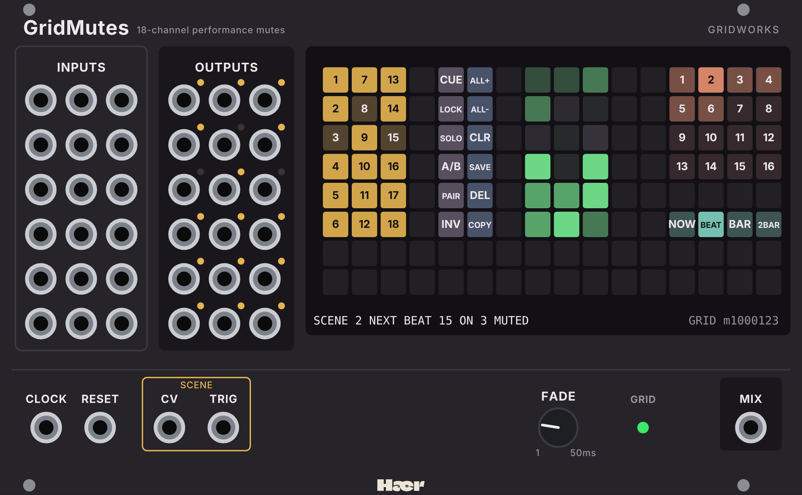

GridMutes
Gridworks plugin for VCV Rack 2 · 18 clocked performance mutes for the monome grid · by Hær

Patch it up
- Patch up to 18 sounds, CVs or trigger streams into INPUTS (down each column: 1–6, 7–12, 13–18). Poly cables work too: all of a cable's channels mute together.
- Take each OUTPUT to your mixer, or leave an output unpatched and that channel goes into MIX, so GridMutes is also an 18-input submixer.
- Patch your clock (16th notes) into CLOCK and its reset into RESET. Without a clock, every change happens at once.
The grid
| Where | What |
|---|
| Columns 1–3, rows 1–6 | Channels 1–18, laid out like the jacks. Tap to mute or unmute. Bright = playing, dark = muted, flashing = waiting for the timing point. |
| Column 5 | CUE · LOCK · SOLO · A/B · PAIR · INV |
| Column 6 | ALL+ (everything on) · ALL- (everything off) · CLR (forget waiting/cued changes and solos) · SAVE · DEL · COPY |
| Columns 8–10 | Signal activity, in the same shape as the channel block: each key glows with that channel's level. A muted channel with signal glows dimly (grey on screen), so you can see what you'd bring in. |
| Columns 13–16, rows 1–4 | Scenes 1–16. Dark = empty, dim = stored, bright = current, flashing = coming at the next timing point. |
| Columns 13–16, row 6 | Timing: NOW · BEAT (default) · BAR · 2BAR. Every change waits for the next one of these. Picking NOW lands anything waiting straight away. |
Every key is a tap, nothing needs holding, so the grid picture on the panel works just as well with the mouse.
Performance keys
- CUE: turn cue on, then tap channels to line up changes (they blink slowly). LOCK drops them all together at the next timing point. Turning CUE off also drops anything still lined up; CLR forgets them.
- SOLO: while it's lit, tapping channels solos them (several at once is fine). Tap SOLO again to go back to muting; the solos stay until you tap them off or press CLR.
- A/B: tap A/B, then two channels. From then on they're always opposite: tapping either swaps them. Do the same two again to undo it.
- PAIR: tap PAIR, then a channel: it's linked to the next one (1 with 2, 7 with 8…) for stereo. Tap it again in PAIR mode to undo.
- INV: every channel flips: what was playing mutes, what was muted plays.
Scenes
- Save: tap SAVE, then a scene key. Delete: tap DEL, then a scene. Copy: tap COPY, the scene to copy, then where it goes. Tap the lit key again to cancel.
- Recall: tap a scene. It lands at the next timing point like any other change.
- SCENE CV: 1 semitone per scene, C4 = scene 1 up to D#5 = scene 16 (the same idea as GridDrums and GridKeys). Any quantised sequencer can play your arrangement.
- TRIG: recalls the CV's scene. Without a CV cable, each trigger steps to the next stored scene. Without a TRIG cable, every change on the CV recalls.
Panel and menu
- FADE (1–50 ms, default 5): how long a mute takes. A few ms stops clicks on audio; turn it right down for triggers and gates.
- The small light by each output is lit while that channel is heard.
- Right-click: pick the grid · Clock input: 16ths, 8ths, quarters or 24 PPQN · Beats per bar: 2–7 (for BAR and 2BAR) · Clear all scenes.
Ideas. (1) Build a track's sections as scenes 1–8, then sequence them from a slow sequencer into SCENE CV. (2) Put kick and bass on an A/B pair so dropping one brings in the other. (3) Use CUE to line up a big change during a fill, then LOCK on the bar. (4) Leave the outputs unpatched and use MIX as a quick submix of all 18.
Inspired by the NO BPM Mute Performer, written from scratch for Rack. Mutes, solos, links, scenes and settings are saved with the patch.